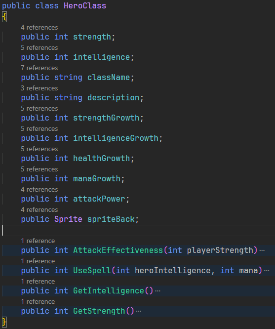
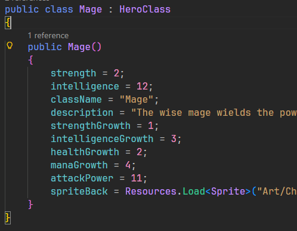
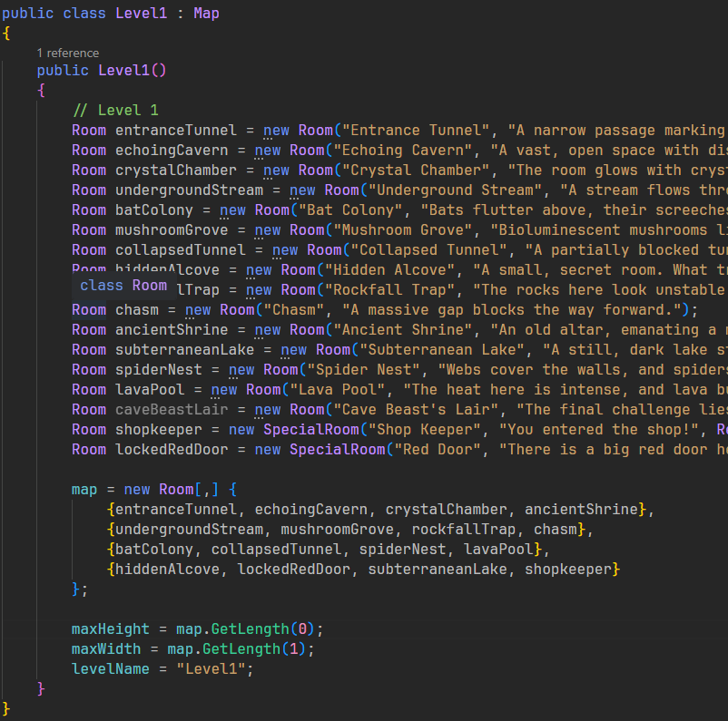
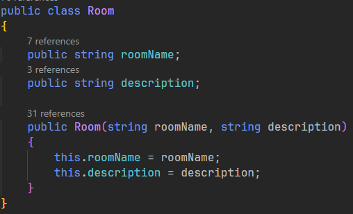
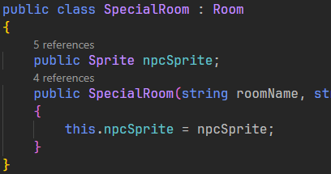

Dungeon Adventure

Tools used
C#
Unity
OOP
Events
Coroutines
Introduction
Turn-based RPG made with Unity. This was the first game I made myself. I learned a lot of basics just scripting simple scripts and classes, basic project structure. I learned a lot from my mistakes. Planning the structure/architecture of the project is very important. I also learned that overscoping is very easy to do, and that you should plan better when making any project. I also learned that creating all assets by yourself is very time consuming, as I made all the assets myself...
Hero classes
The hero class is what the player chooses at the start of the game. They can pick between 3 different classes, where each works a little differently than the other.
Levels
The level system in this game is made of the Map class. The map is made of the Room class that is made into a 2d array. This enables the level to be 2d and the player can traverse the level in 4 directions. The room class also stores data like descriptions which can tell the player different stories of the world. Some rooms are also special rooms, which has special effects like spawning a door or a shop merchant.
 Combat
The combat was a very basic Turn-based style. The player can
attack, use spell and use potions. The enemy can use attack
and heal themselves, where it is always random of what action
they will perform.
I made one script for the entire combat system. Each combat starts
with the player's turn first. After the player used their action,
a coroutine starts and performs the enemy's actions and displays
the different movements until their action is over.
Conclusion
Looking back at this project I can definitely tell that I have learned a lot since I started the project. A lot of code is messy and not organized. It is missing a lot of Unity code convention and structure. A lot of the code could be made into Scriptable Objects, like the the hero classes and items etc. And a lot of code could be made into components instead of making 300 lines of the Player class.